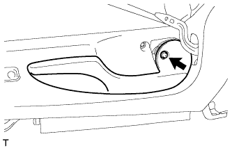
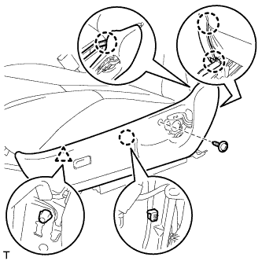
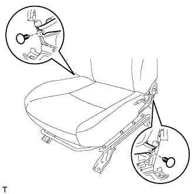
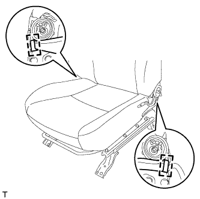

ПОДОГРЕВАТЕЛЬ ПОДУШКИ ПЕРЕДНЕГО СИДЕНЬЯ В СБОРЕ (для сидений с ручным приводом) > СНЯТИЕ |
| 1. СНИМИТЕ ПЕРЕДНЕЕ СИДЕНЬЕ В СБОРЕ |
Снимите переднее сиденье в сборе (Нажмите здесь).
| 2. СНИМИТЕ РУЧКУ ОТПУСКАНИЯ РЕГУЛЯТОРА НАКЛОНА ЛЕВОГО СИДЕНЬЯ |
 |
Поднимите ручку отпускания регулятора угла наклона, чтобы открыть захват. С помощью отвертки освободите захват и снимите ручку.
| *1 | Защитная клейкая лента |
| 3. СНИМИТЕ РУКОЯТКУ РЕГУЛЯТОРА ПОЛОЖЕНИЯ ЛЕВОГО СИДЕНЬЯ ПО ВЕРТИКАЛИ (для стороны водителя) |
|  |
Выверните винт и снимите ручку.
| 4. СНИМИТЕ ЗАЩИТНЫЙ ЩИТОК ПОДУШКИ ЛЕВОГО ПЕРЕДНЕГО СИДЕНЬЯ |
|  |
Выверните винт.
С помощью съемника молдингов освободите 4 захвата и фиксатор и снимите защитный щиток подушки.
 |
Со стороны водителя:
Открепите 5 зажимов жгута проводов и отсоедините 2 разъема.
| 5. СНИМИТЕ ВНУТРЕННИЙ ЗАЩИТНЫЙ ЩИТОК ПОДУШКИ ЛЕВОГО ПЕРЕДНЕГО СИДЕНЬЯ |
 |
С помощью съемника молдингов освободите 3 захвата и снимите защитный щиток подушки.
| 6. СНИМИТЕ ВНУТРЕННИЙ ЗАЩИТНЫЙ ЩИТОК ПОДУШКИ ПРАВОГО ПЕРЕДНЕГО СИДЕНЬЯ (со стороны переднего пассажира) |
 |
С помощью съемника молдингов освободите 4 захвата и снимите защитный щиток подушки.
| 7. СНИМИТЕ ЗАМОК РЕМНЯ БЕЗОПАСНОСТИ ЛЕВОГО ПЕРЕДНЕГО СИДЕНЬЯ В СБОРЕ |
Со стороны водителя:
Отсоедините разъем и освободите 4 зажима.
Со стороны переднего пассажира:
Отсоедините 2 разъема и освободите 3 зажима.
 |
Отверните гайку и снимите замок ремня безопасности переднего сиденья.
| 8. СНИМИТЕ ОБИВКУ ПОДУШКИ СИДЕНЬЯ ВМЕСТЕ С ПОДУШКОЙ |
 |
Снимите резиновую ленту с пружины подушки сиденья.
 |
Отсоедините разъем подогревателя сиденья и освободите зажим жгута проводов.
 |
Для моделей с боковой подушкой безопасности переднего сиденья:
Отсоедините крепежную ленту и откройте крышку.
| *1 | Крепежная лента |
Отсоедините жгут проводов подушки безопасности.
|  |
Для модели с фиксатором:
С помощью съемника молдингов снимите 2 фиксатора.
|  |
Для модели с креплением:
Отцепите 2 крюка.
 |
Отсоедините разъем подогревателя сиденья и открепите 3 зажима жгута проводов.
Отсоедините крепления.

 |
Со стороны переднего пассажира:
Освободите захват и отсоедините разъем.
Снимите обивку подушки сиденья вместе с подушкой.
| 9. СНИМИТЕ ОБИВКУ ПОДУШКИ РАЗДЕЛЬНОГО ПЕРЕДНЕГО СИДЕНЬЯ |
 |
Снимите витковые пружины и обивку подушки сиденья с подушки сиденья.
| 10. СНИМИТЕ ПОДОГРЕВАТЕЛЬ ПОДУШКИ ЛЕВОГО ПЕРЕДНЕГО СИДЕНЬЯ В СБОРЕ |
 |
Срежьте закрепки и снимите подогреватель подушки переднего сиденья с обивки подушки переднего сиденья.
| *1 | Стяжка |